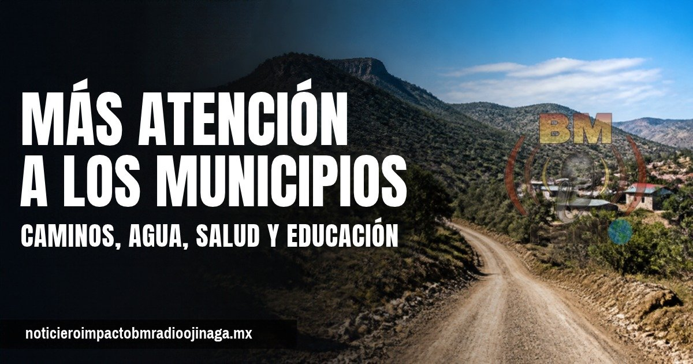
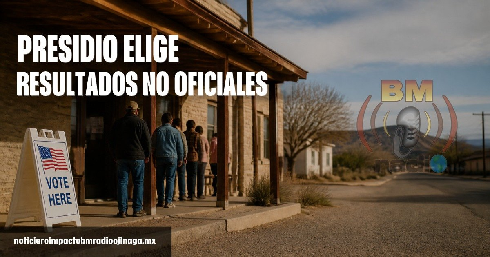
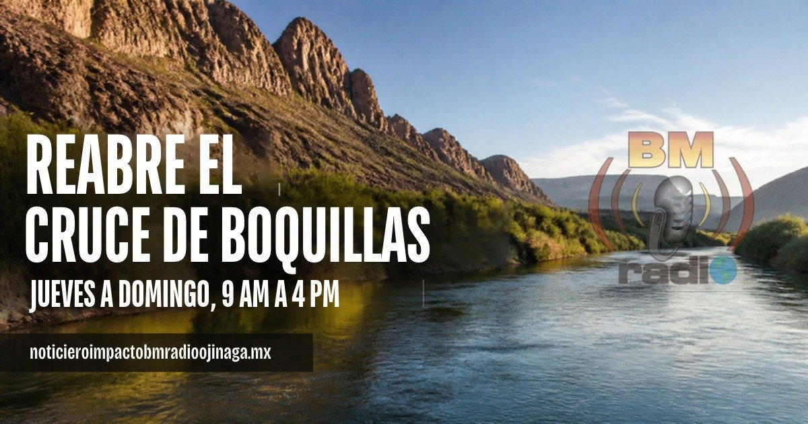
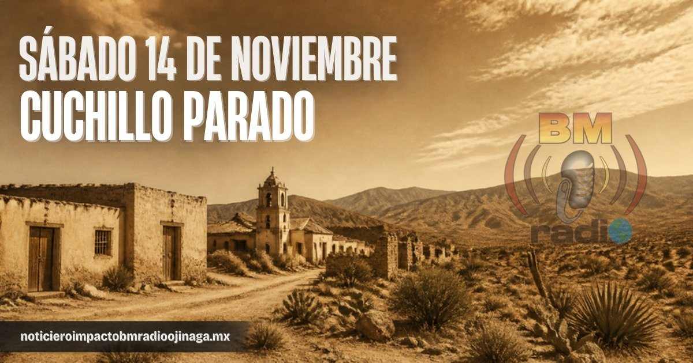
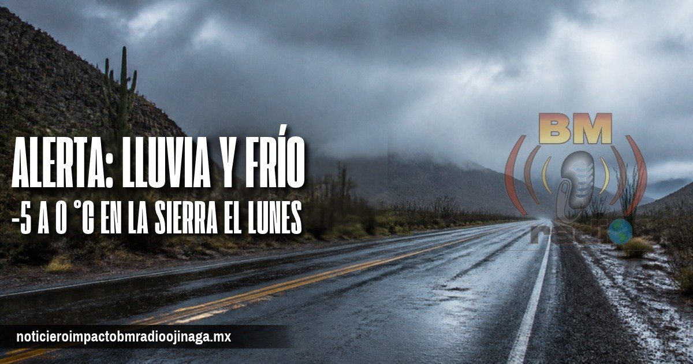
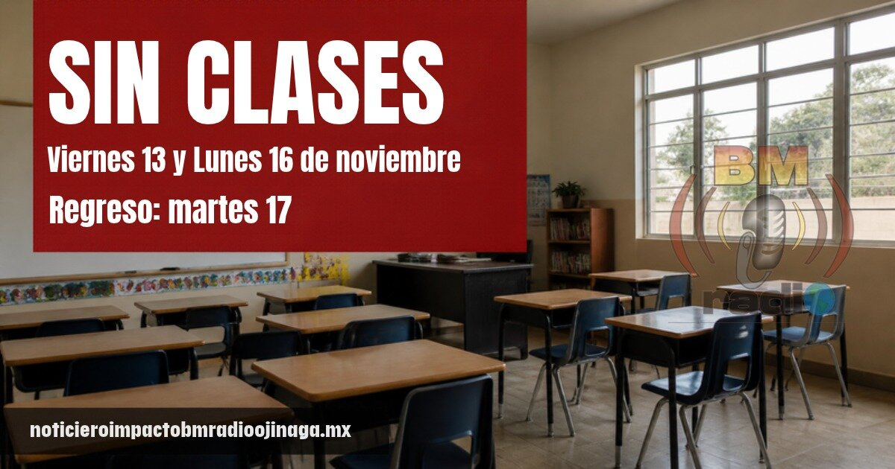
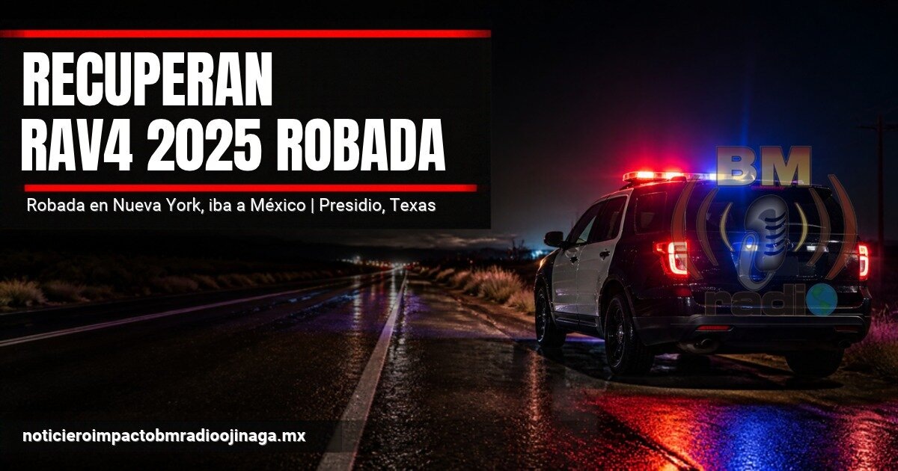
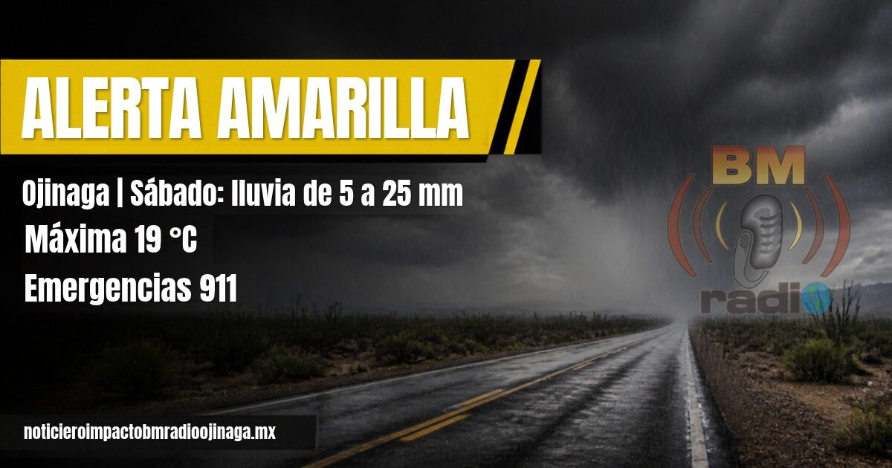
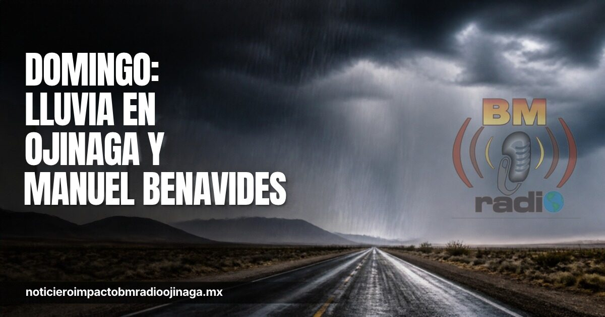
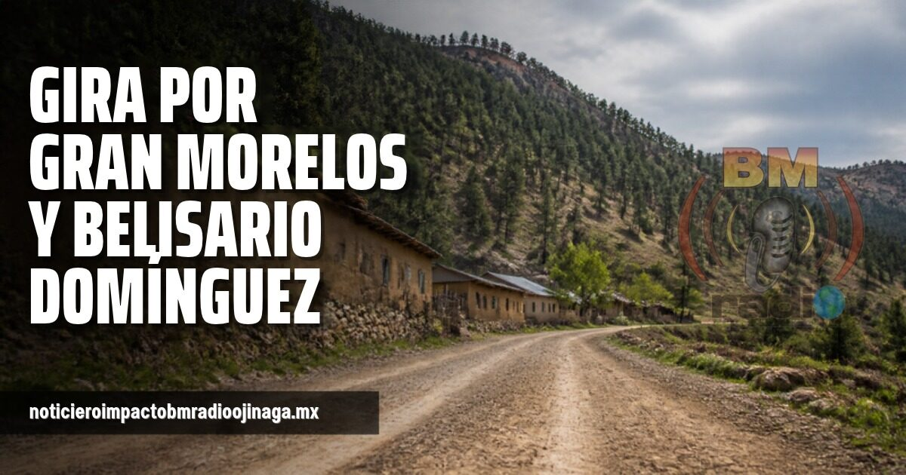

Local
El ojinaguense Kevin Uriel Pacheco debutó con éxito en el box amateur. Ganó por nocaut técnico en el primer round, al minuto 1:10, en el torneo Reyes del Ring en Ciudad Juárez. Lo acompañaron sus entrenadores Juan Carlos Ramírez y César Ramírez. Felicidades a este joven talento de nuestra tierra.
Estatal
En un recorrido de este fin de semana por la sierra, el equipo del noticiero encontró la carretera de San Rafael a Urique en muy malas condiciones, con baches enormes que ponen en riesgo a quienes la transitan. En pleno camino se toparon con niños de la zona que, con cubetas, sacaban tierra del cerro para rellenar los hoyos. Mira el video completo en Facebook.
Estatal
Cruz Pérez Cuéllar, coordinador estatal de la Defensa de la Transformación en Chihuahua, encabezó este domingo en Cuauhtémoc una reunión de unidad por los 15 años del movimiento. Ahí señaló que los gobiernos del PAN dejaron pendientes en el municipio, como un relleno sanitario adecuado, un hospital de calidad, la inseguridad y el abandono del campo. Dijo que el reto es mantener los programas sociales y defender las pensiones de los adultos mayores. Antes recorrió San Francisco de Borja y Riva Palacio, donde recibió propuestas de productores y habitantes.
Local
Esta denuncia vuelve a poner sobre la mesa las necesidades que enfrenta el sector salud en Ojinaga, donde los ciudadanos reclaman atención, medicamentos, personal médico y servicios básicos para recibir una atención digna. El problema no es nuevo. Durante meses se han expresado inconformidades por las condiciones de atención en el hospital, mientras que la población considera que las necesidades de salud de Ojinaga no han recibido la respuesta que requieren por parte de la Secretaría de Salud y del Gobierno del Estado, encabezado por María Eugenia Campos Galván. Incluso, fue necesario recurrir al Presupuesto Participativo para impulsar mejoras en las instalaciones hospitalarias, una situación que ha generado cuestionamientos sobre las responsabilidades que corresponden a las autoridades estatales en materia de infraestructura y servicios de salud. Ojinaga no pide privilegios, exige atención. La salud no puede quedar en segundo plano ni depender de que los ciudadanos tengan que insistir una y otra vez para recibir un servicio. La pregunta sigue en el aire: ¿cuándo se restablecerán los análisis clínicos y quién dará una respuesta concreta a los pacientes? La ciudadanía merece respuestas, pero sobre todo soluciones.
Nacional
Con el triunfo demócrata en las dos cámaras del Congreso de Estados Unidos, analistas prevén que el impuesto de 1% a las remesas enviadas en efectivo podría eliminarse. Carlos Serrano, economista en jefe de BBVA México, dijo que "incluso se puede quitar". Aclaró que la decisión le corresponde al Congreso. Los envíos electrónicos no pagan este impuesto. BBVA estima que este año llegarán a México 64 mil 100 millones de dólares en remesas.

Estatal
Cruz Pérez Cuéllar, coordinador estatal de la Defensa de la Cuarta Transformación y la Soberanía Nacional, visitó Nonoava. Ahí señaló que el desarrollo "no se construye desde los escritorios". Pidió coordinación entre los niveles de gobierno para que los recursos lleguen a las comunidades. Los habitantes le plantearon necesidades de caminos, agua potable, salud y educación. Días antes había estado en Gran Morelos y Belisario Domínguez.

Frontera
Según resultados no oficiales de la elección del 3 de noviembre, la abogada Susan Hays ganó el Precinto 4 con 459 votos, contra 264 de la candidata por escritura Ida Domínguez. Fueron reelectos sin oponente el juez del condado Joe Portillo, la secretaria Carolina Cataño, la tesorera Florcita Zubia y la jueza de paz Dina Jo Márquez. Los resultados se oficializan con el conteo del condado.

Frontera
El cruce fronterizo de Boquillas, entre el Parque Nacional Big Bend y Boquillas del Carmen, volvió a abrir. Estuvo cerrado tres semanas por la crecida del río Bravo y el lodo en el sendero. Abre de jueves a domingo, de 9 de la mañana a 4 de la tarde, hora de Texas. El parque advierte que aún queda un tramo de lodo resbaloso.

Local
El presidente municipal de Coyame del Sotol, Felipe Armando Reyes Mancha, invita a la Sesión Solemne del sábado 14 de noviembre en Cuchillo Parado, cuna de la Revolución Mexicana. Para recibir a los visitantes, vecinos contratados por el municipio reparan a pala los baches de la carretera federal 16. Si viaja, maneje con precaución en ese tramo.
Policiaca
La Secretaría de Seguridad Pública Estatal recuperó en 2026 un total de 147 vehículos con reporte de robo o fraude en Estados Unidos. Los autos venían de 11 estados del país vecino y valen más de 170 millones de pesos. Se encontraron en al menos 12 municipios de Chihuahua: 52 en Juárez, 22 en Chihuahua capital, 19 en Cuauhtémoc, 9 en Ojinaga y 9 en Nuevo Casas Grandes. Antes de comprar un vehículo, revise su historial.

Estatal
Protección Civil del Estado mantiene la alerta por lluvias, bajas temperaturas y posible aguanieve en la sierra. Ya se reportó aguanieve en San Juanito. El Servicio Meteorológico prevé este domingo chubascos de 25 a 50 milímetros en el estado y rachas de viento de hasta 50 km/h. Para la madrugada del lunes se esperan de -5 a 0 grados en la sierra. Se recomienda manejar con precaución por el piso mojado.
Nacional
Desde este sábado 7 de noviembre y hasta el viernes 13, Hacienda aumentó por cuarta semana consecutiva el impuesto especial (IEPS) a las gasolinas, con un alza de más de un peso por litro. La cuota de la Magna queda en 4.95 pesos por litro y la de la Premium en 4.27 pesos. El diésel sigue sin pagar este impuesto por novena semana. Hacienda aclaró que el aumento no necesariamente se reflejará en el mismo monto en el precio de la bomba.
Local
Este sábado se esperan temperaturas de 17 °C máxima y mínima de 13 °C. 40% de probabilidad de lluvia, la velocidad del viento de 8 a 21 kilómetros por hora. La calidad del aire buena.
Nacional
El precio promedio nacional reportado el viernes 6 de noviembre fue de 23.70 pesos por litro para la Magna, 28.60 para la Premium y 26.98 para el diésel. La Magna se mantiene por debajo del tope de 24 pesos acordado con los gasolineros. En Ojinaga los precios pueden variar según la estación.
Nacional
Ya se publicó en el Diario Oficial la Ley de Economía Digital. Desde el 5 de noviembre, los gobiernos federal, estatal y municipal deben aceptar pagos con tarjeta, transferencia o QR en sus trámites. Hacienda tiene 15 días hábiles para definir en qué sectores solo se podrá pagar de forma digital; la presidenta había mencionado gasolineras y casetas. Por ahora el efectivo no está prohibido, y los negocios tendrán un periodo de transición.

Nacional
Según el calendario de la SEP, los alumnos de educación básica no tendrán clases el viernes 13 de noviembre, por jornada de descarga administrativa, ni el lunes 16, por el Día de la Revolución. Regresan el martes 17. Habrá otro día sin clases el viernes 27, por Consejo Técnico Escolar. El lunes 16 también es día de descanso obligatorio para los trabajadores.

Policiaca
Agentes de la Oficina del Sheriff del Condado de Presidio, junto con Investigaciones de Seguridad Nacional (HSI) en Presidio, recuperaron una Toyota RAV4 2025 robada en Nueva York. La encontraron en un patio de transmigrantes, con identificación clonada para exportarla a México. Hay personas bajo investigación por uso no autorizado de vehículo y alteración de documentos oficiales. Agencias de varios estados comparten información sobre el paso de autos robados por esta zona.

Local
Protección Civil del Estado mantiene alerta amarilla para hoy sábado en Ojinaga, con lluvias de 5 a 25 milímetros, posibles tormentas eléctricas y granizo, y una máxima de apenas 19 grados. La lluvia sigue el domingo en Ojinaga y Manuel Benavides. En Juárez, Chihuahua capital y Cuauhtémoc la alerta es naranja, y en la sierra podría nevar esta noche, con riesgo de hielo en carreteras. Se recomienda no cruzar arroyos crecidos, manejar con precaución y no usar calentadores de combustión en cuartos cerrados. Emergencias: 911.

Local
Protección Civil del Estado amplió hasta el domingo 8 de noviembre la alerta por el frente frío número 4. Para el domingo se esperan lluvias de dispersas a moderadas en Ojinaga y Manuel Benavides. El sábado habrá alerta naranja en Juárez, Chihuahua y Cuauhtémoc, con acumulados de hasta 50 milímetros, y posible aguanieve o nieve en lo alto de la sierra. Se recomienda no cruzar arroyos ni calles inundadas, abrigarse y no usar calentones sin ventilación. Emergencias al 9-1-1.

Estatal
Cruz Pérez Cuéllar, coordinador estatal de la Defensa de la Transformación en Chihuahua, visitó San Nicolás de Carretas, en Gran Morelos, y Santa Bárbara de Tutuaca, en Belisario Domínguez, donde dialogó con habitantes, personal educativo y asociaciones de la región. Planteó que hace falta más coordinación entre municipios para impulsar el desarrollo regional y que deben terminar los enfrentamientos entre el Gobierno del Estado y la Federación. "Soy un hombre de territorio", expresó.